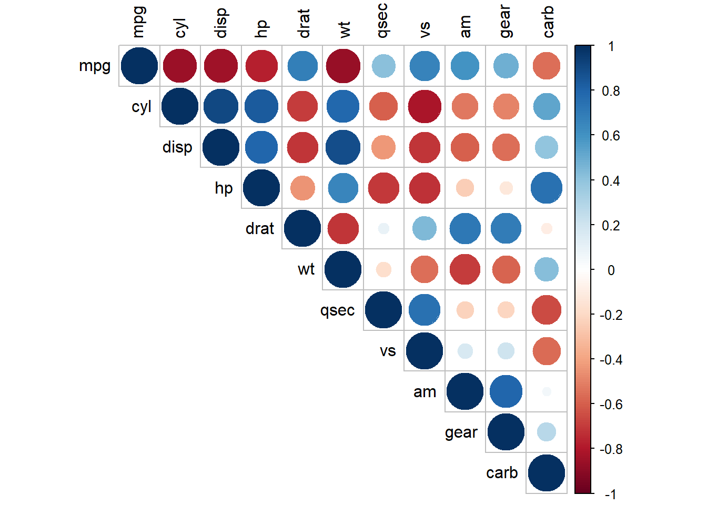
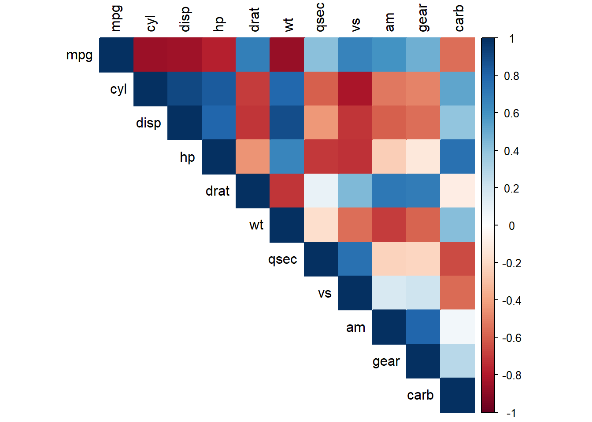
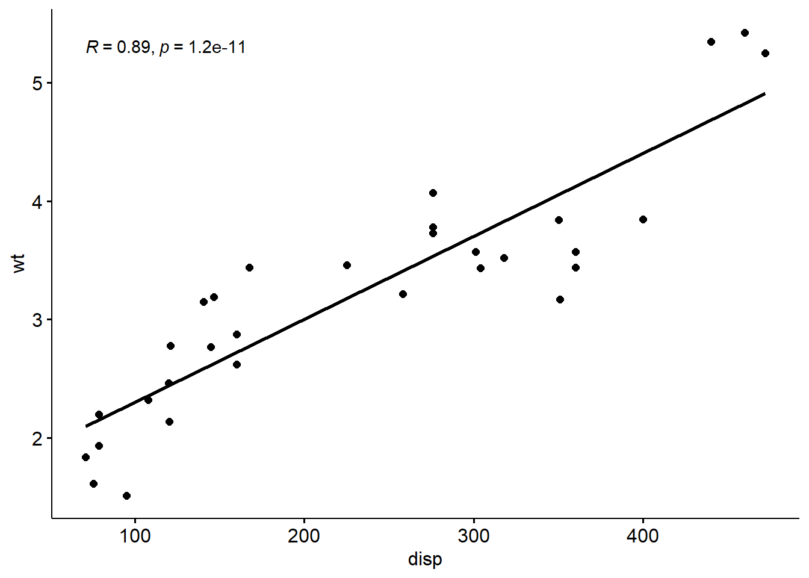
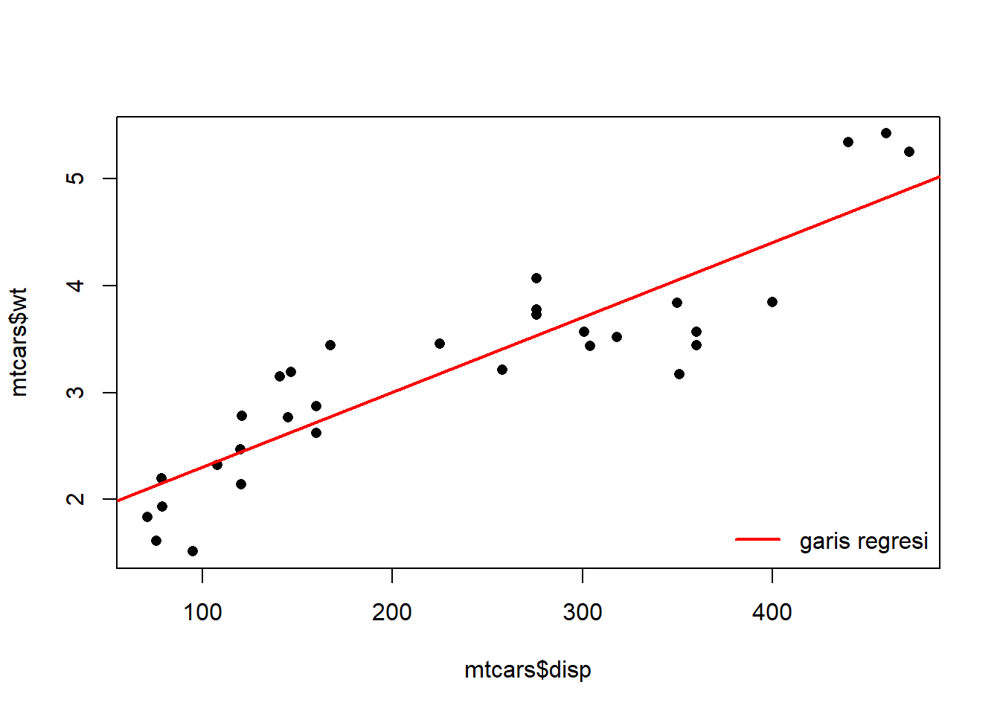

data("mtcars")(Pertemuan 10) Regresi Linear di Excel dan R, Komunikasi Hasil: Markdown, Quarto, Pengantar LaTeX
Linear Regression in Excel and R, Communicating Results: Markdown, Quarto, Intro to LaTeX
Offline di Departemen Matematika
Kembali ke Pengantar Sains Data
Korelasi dan Regresi Linear di Excel
Silakan unduh worksheet berikut: Worksheet Pertemuan 10
Korelasi dan Regresi Linear di R
Kita akan menggunakan dataset mtcars
mtcars mpg cyl disp hp drat wt qsec vs am gear carb
Mazda RX4 21.0 6 160.0 110 3.90 2.620 16.46 0 1 4 4
Mazda RX4 Wag 21.0 6 160.0 110 3.90 2.875 17.02 0 1 4 4
Datsun 710 22.8 4 108.0 93 3.85 2.320 18.61 1 1 4 1
Hornet 4 Drive 21.4 6 258.0 110 3.08 3.215 19.44 1 0 3 1
Hornet Sportabout 18.7 8 360.0 175 3.15 3.440 17.02 0 0 3 2
Valiant 18.1 6 225.0 105 2.76 3.460 20.22 1 0 3 1
Duster 360 14.3 8 360.0 245 3.21 3.570 15.84 0 0 3 4
Merc 240D 24.4 4 146.7 62 3.69 3.190 20.00 1 0 4 2
Merc 230 22.8 4 140.8 95 3.92 3.150 22.90 1 0 4 2
Merc 280 19.2 6 167.6 123 3.92 3.440 18.30 1 0 4 4
Merc 280C 17.8 6 167.6 123 3.92 3.440 18.90 1 0 4 4
Merc 450SE 16.4 8 275.8 180 3.07 4.070 17.40 0 0 3 3
Merc 450SL 17.3 8 275.8 180 3.07 3.730 17.60 0 0 3 3
Merc 450SLC 15.2 8 275.8 180 3.07 3.780 18.00 0 0 3 3
Cadillac Fleetwood 10.4 8 472.0 205 2.93 5.250 17.98 0 0 3 4
Lincoln Continental 10.4 8 460.0 215 3.00 5.424 17.82 0 0 3 4
Chrysler Imperial 14.7 8 440.0 230 3.23 5.345 17.42 0 0 3 4
Fiat 128 32.4 4 78.7 66 4.08 2.200 19.47 1 1 4 1
Honda Civic 30.4 4 75.7 52 4.93 1.615 18.52 1 1 4 2
Toyota Corolla 33.9 4 71.1 65 4.22 1.835 19.90 1 1 4 1
Toyota Corona 21.5 4 120.1 97 3.70 2.465 20.01 1 0 3 1
Dodge Challenger 15.5 8 318.0 150 2.76 3.520 16.87 0 0 3 2
AMC Javelin 15.2 8 304.0 150 3.15 3.435 17.30 0 0 3 2
Camaro Z28 13.3 8 350.0 245 3.73 3.840 15.41 0 0 3 4
Pontiac Firebird 19.2 8 400.0 175 3.08 3.845 17.05 0 0 3 2
Fiat X1-9 27.3 4 79.0 66 4.08 1.935 18.90 1 1 4 1
Porsche 914-2 26.0 4 120.3 91 4.43 2.140 16.70 0 1 5 2
Lotus Europa 30.4 4 95.1 113 3.77 1.513 16.90 1 1 5 2
Ford Pantera L 15.8 8 351.0 264 4.22 3.170 14.50 0 1 5 4
Ferrari Dino 19.7 6 145.0 175 3.62 2.770 15.50 0 1 5 6
Maserati Bora 15.0 8 301.0 335 3.54 3.570 14.60 0 1 5 8
Volvo 142E 21.4 4 121.0 109 4.11 2.780 18.60 1 1 4 2View(mtcars)Hitungan Korelasi
Di R, ada fungsi cor yang menghitung korelasi untuk variabel numerik
?corstarting httpd help server ... donecor(mtcars) mpg cyl disp hp drat wt
mpg 1.0000000 -0.8521620 -0.8475514 -0.7761684 0.68117191 -0.8676594
cyl -0.8521620 1.0000000 0.9020329 0.8324475 -0.69993811 0.7824958
disp -0.8475514 0.9020329 1.0000000 0.7909486 -0.71021393 0.8879799
hp -0.7761684 0.8324475 0.7909486 1.0000000 -0.44875912 0.6587479
drat 0.6811719 -0.6999381 -0.7102139 -0.4487591 1.00000000 -0.7124406
wt -0.8676594 0.7824958 0.8879799 0.6587479 -0.71244065 1.0000000
qsec 0.4186840 -0.5912421 -0.4336979 -0.7082234 0.09120476 -0.1747159
vs 0.6640389 -0.8108118 -0.7104159 -0.7230967 0.44027846 -0.5549157
am 0.5998324 -0.5226070 -0.5912270 -0.2432043 0.71271113 -0.6924953
gear 0.4802848 -0.4926866 -0.5555692 -0.1257043 0.69961013 -0.5832870
carb -0.5509251 0.5269883 0.3949769 0.7498125 -0.09078980 0.4276059
qsec vs am gear carb
mpg 0.41868403 0.6640389 0.59983243 0.4802848 -0.55092507
cyl -0.59124207 -0.8108118 -0.52260705 -0.4926866 0.52698829
disp -0.43369788 -0.7104159 -0.59122704 -0.5555692 0.39497686
hp -0.70822339 -0.7230967 -0.24320426 -0.1257043 0.74981247
drat 0.09120476 0.4402785 0.71271113 0.6996101 -0.09078980
wt -0.17471588 -0.5549157 -0.69249526 -0.5832870 0.42760594
qsec 1.00000000 0.7445354 -0.22986086 -0.2126822 -0.65624923
vs 0.74453544 1.0000000 0.16834512 0.2060233 -0.56960714
am -0.22986086 0.1683451 1.00000000 0.7940588 0.05753435
gear -0.21268223 0.2060233 0.79405876 1.0000000 0.27407284
carb -0.65624923 -0.5696071 0.05753435 0.2740728 1.00000000Agar lebih mudah dibaca, bisa dibulatkan hingga dua digit di belakang koma:
round(cor(mtcars), 2) mpg cyl disp hp drat wt qsec vs am gear carb
mpg 1.00 -0.85 -0.85 -0.78 0.68 -0.87 0.42 0.66 0.60 0.48 -0.55
cyl -0.85 1.00 0.90 0.83 -0.70 0.78 -0.59 -0.81 -0.52 -0.49 0.53
disp -0.85 0.90 1.00 0.79 -0.71 0.89 -0.43 -0.71 -0.59 -0.56 0.39
hp -0.78 0.83 0.79 1.00 -0.45 0.66 -0.71 -0.72 -0.24 -0.13 0.75
drat 0.68 -0.70 -0.71 -0.45 1.00 -0.71 0.09 0.44 0.71 0.70 -0.09
wt -0.87 0.78 0.89 0.66 -0.71 1.00 -0.17 -0.55 -0.69 -0.58 0.43
qsec 0.42 -0.59 -0.43 -0.71 0.09 -0.17 1.00 0.74 -0.23 -0.21 -0.66
vs 0.66 -0.81 -0.71 -0.72 0.44 -0.55 0.74 1.00 0.17 0.21 -0.57
am 0.60 -0.52 -0.59 -0.24 0.71 -0.69 -0.23 0.17 1.00 0.79 0.06
gear 0.48 -0.49 -0.56 -0.13 0.70 -0.58 -0.21 0.21 0.79 1.00 0.27
carb -0.55 0.53 0.39 0.75 -0.09 0.43 -0.66 -0.57 0.06 0.27 1.00Baris-baris dan kolom-kolom berupa variabel numerik. Kita dapat membaca korelasi antara dua variabel, misal antara “x” dan “y”, dengan membaca nilai di baris “x”, kolom “y” (atau sama saja nilai di baris “y”, kolom “x”).
Nilai yang jauh dari nol (mendekati 1 atau -1): kedua variabel berkorelasi tinggi (berkaitan dengan erat).
Nilai positif: korelasi positif; jika nilai salah satu naik, nilai satunya cenderung ikut naik
Nilai negatif: korelasi negatif; jika nilai salah satu naik, nilai satunya malah cenderung turun; atau sebaliknya, jika nilai salah satu turun, nilai satunya malah cenderung naik
Hitungan korelasi yang dipelajari di kuliah PSD disebut korelasi Pearson. Kita bisa memintanya secara spesifik,
round(cor(mtcars, method = "pearson"), 2) mpg cyl disp hp drat wt qsec vs am gear carb
mpg 1.00 -0.85 -0.85 -0.78 0.68 -0.87 0.42 0.66 0.60 0.48 -0.55
cyl -0.85 1.00 0.90 0.83 -0.70 0.78 -0.59 -0.81 -0.52 -0.49 0.53
disp -0.85 0.90 1.00 0.79 -0.71 0.89 -0.43 -0.71 -0.59 -0.56 0.39
hp -0.78 0.83 0.79 1.00 -0.45 0.66 -0.71 -0.72 -0.24 -0.13 0.75
drat 0.68 -0.70 -0.71 -0.45 1.00 -0.71 0.09 0.44 0.71 0.70 -0.09
wt -0.87 0.78 0.89 0.66 -0.71 1.00 -0.17 -0.55 -0.69 -0.58 0.43
qsec 0.42 -0.59 -0.43 -0.71 0.09 -0.17 1.00 0.74 -0.23 -0.21 -0.66
vs 0.66 -0.81 -0.71 -0.72 0.44 -0.55 0.74 1.00 0.17 0.21 -0.57
am 0.60 -0.52 -0.59 -0.24 0.71 -0.69 -0.23 0.17 1.00 0.79 0.06
gear 0.48 -0.49 -0.56 -0.13 0.70 -0.58 -0.21 0.21 0.79 1.00 0.27
carb -0.55 0.53 0.39 0.75 -0.09 0.43 -0.66 -0.57 0.06 0.27 1.00atau sewaktu-waktu kalian bisa mencoba hitungan korelasi lain, seperti korelasi Spearman atau korelasi Kendall
round(cor(mtcars, method = "spearman"), 2) mpg cyl disp hp drat wt qsec vs am gear carb
mpg 1.00 -0.91 -0.91 -0.89 0.65 -0.89 0.47 0.71 0.56 0.54 -0.66
cyl -0.91 1.00 0.93 0.90 -0.68 0.86 -0.57 -0.81 -0.52 -0.56 0.58
disp -0.91 0.93 1.00 0.85 -0.68 0.90 -0.46 -0.72 -0.62 -0.59 0.54
hp -0.89 0.90 0.85 1.00 -0.52 0.77 -0.67 -0.75 -0.36 -0.33 0.73
drat 0.65 -0.68 -0.68 -0.52 1.00 -0.75 0.09 0.45 0.69 0.74 -0.13
wt -0.89 0.86 0.90 0.77 -0.75 1.00 -0.23 -0.59 -0.74 -0.68 0.50
qsec 0.47 -0.57 -0.46 -0.67 0.09 -0.23 1.00 0.79 -0.20 -0.15 -0.66
vs 0.71 -0.81 -0.72 -0.75 0.45 -0.59 0.79 1.00 0.17 0.28 -0.63
am 0.56 -0.52 -0.62 -0.36 0.69 -0.74 -0.20 0.17 1.00 0.81 -0.06
gear 0.54 -0.56 -0.59 -0.33 0.74 -0.68 -0.15 0.28 0.81 1.00 0.11
carb -0.66 0.58 0.54 0.73 -0.13 0.50 -0.66 -0.63 -0.06 0.11 1.00round(cor(mtcars, method = "kendall"), 2) mpg cyl disp hp drat wt qsec vs am gear carb
mpg 1.00 -0.80 -0.77 -0.74 0.46 -0.73 0.32 0.59 0.47 0.43 -0.50
cyl -0.80 1.00 0.81 0.79 -0.55 0.73 -0.45 -0.77 -0.49 -0.51 0.47
disp -0.77 0.81 1.00 0.67 -0.50 0.74 -0.30 -0.60 -0.52 -0.48 0.41
hp -0.74 0.79 0.67 1.00 -0.38 0.61 -0.47 -0.63 -0.30 -0.28 0.60
drat 0.46 -0.55 -0.50 -0.38 1.00 -0.55 0.03 0.38 0.58 0.58 -0.10
wt -0.73 0.73 0.74 0.61 -0.55 1.00 -0.14 -0.49 -0.61 -0.54 0.37
qsec 0.32 -0.45 -0.30 -0.47 0.03 -0.14 1.00 0.66 -0.17 -0.09 -0.51
vs 0.59 -0.77 -0.60 -0.63 0.38 -0.49 0.66 1.00 0.17 0.27 -0.58
am 0.47 -0.49 -0.52 -0.30 0.58 -0.61 -0.17 0.17 1.00 0.77 -0.06
gear 0.43 -0.51 -0.48 -0.28 0.58 -0.54 -0.09 0.27 0.77 1.00 0.10
carb -0.50 0.47 0.41 0.60 -0.10 0.37 -0.51 -0.58 -0.06 0.10 1.00Plot Korelasi
Nilai-nilai korelasi bisa digambarkan/divisualisasikan dengan yang namanya heatmap, agar lebih mudah dibaca.
Untuk itu, kita bisa gunakan package corrplot
Seperti biasa, instal terlebih dahulu kalau belum:
install.packages("corrplot")Lalu aktifkan:
library("corrplot")corrplot 0.95 loadedSebelum membuat plot korelasi, kita perlu simpan dulu matriks korelasi (tidak perlu membulatkan):
matriks_korelasi <- cor(mtcars, method = "pearson")Kemudian kita tinggal gunakan fungsi corrplot
?corrplotcorrplot(matriks_korelasi,
type = "upper",
tl.col = "black")
corrplot(matriks_korelasi,
type = "upper",
tl.col = "black",
method = "color")
Uji Korelasi
Uji korelasi antar 2 variabel
Misalkan, akan dilakukan uji antara variabel disp dan wt (masih data mtcars)
H0: korelasi \(= 0\)
H1: korelasi \(\ne 0\)
?cor.testcor.test(mtcars$disp,
mtcars$wt,
method = "pearson")
Pearson's product-moment correlation
data: mtcars$disp and mtcars$wt
t = 10.576, df = 30, p-value = 1.222e-11
alternative hypothesis: true correlation is not equal to 0
95 percent confidence interval:
0.7811586 0.9442902
sample estimates:
cor
0.8879799 Hubungan antara kedua variabel juga bisa digambarkan, misalnya dengan fungsi ggscatter dari package ggpubr
install.packages("ggpubr")library("ggpubr")Loading required package: ggplot2ggscatter(mtcars,
x = "disp",
y = "wt",
add = "reg.line",
cor.coef = TRUE,
cor.method = "pearson")
Regresi Linear (Sederhana)
Yang selalu diingat dalam regresi, ada variabel dependen dan independen
Melanjutkan yang sebelumnya, misalkan dianggap variabel dependennya wt dan independennya disp
Hubungan apa yang terjadi jika variabel dependen dan independennya seperti itu?
Cari persamaan regresinya.
Persamaan regresi linear sederhana:
\[Y = \beta_0 + \beta_1 * X + \text{ error}\]
dengan \(\text{ error } \sim N(0, \sigma^2)\)
Karena \(Y = \text{wt}\) dan \(X = \text{disp}\), maka persamaan taksiran regresinya menjadi
\[\text{wt } \approx \beta_0 + \beta_1 * \text{ disp } + \text{ error}\]
Di R, kita bisa membentuk model linear dengan fungsi lm (linear model)
?lmKedua cara penggunaan berikut ini sama saja:
model1 <- lm(wt ~ disp, data = mtcars)model2 <- lm(mtcars$wt ~ mtcars$disp)Setelah itu, kita bisa melihat ringkasan dari model linear yang terbentuk:
summary(model1)
Call:
lm(formula = wt ~ disp, data = mtcars)
Residuals:
Min 1Q Median 3Q Max
-0.89044 -0.29775 -0.00684 0.33428 0.66525
Coefficients:
Estimate Std. Error t value Pr(>|t|)
(Intercept) 1.5998146 0.1729964 9.248 2.74e-10 ***
disp 0.0070103 0.0006629 10.576 1.22e-11 ***
---
Signif. codes: 0 '***' 0.001 '**' 0.01 '*' 0.05 '.' 0.1 ' ' 1
Residual standard error: 0.4574 on 30 degrees of freedom
Multiple R-squared: 0.7885, Adjusted R-squared: 0.7815
F-statistic: 111.8 on 1 and 30 DF, p-value: 1.222e-11\[\text{wt} \approx 1.6 + 0.007 \text{ disp}\]
Interpretasi: Jika disp naik 1 satuan, maka RATA-RATA wt naik 0.007 kali
Visualisasi sedikit:
plot(mtcars$disp,
mtcars$wt,
pch = 16)
abline(model1,
col = "red",
lwd = 2)
legend("bottomright",
legend = "garis regresi",
col = "red",
lwd = 2,
bty = "n")
Komunikasi Hasil: Markdown, Quarto, Pengantar LaTeX
Kita telah memperhatikan hubungan antara variabel wt dengan variabel disp.
Selain kemampuan menganalisis hingga membuat kesimpulan, kemampuan yang tidak kalah penting di dunia data adalah kemampuan berkomunikasi, seperti mengomunikasikan hasil analisis yang dilakukan.
Sebagai praktikum untuk kuliah Pengantar Sains Data, kami ingin memperkenalkan software yang mempermudah dalam hal ini, yaitu Quarto: https://quarto.org/
Untungnya, Quarto sudah tersedia di RStudio versi terbaru (sejak v2022.7) dan juga ada package quarto yang bisa diinstal. Mari kita eksplor!
Buat terlebih dahulu suatu dokumen Quarto baru, yaitu file .qmd, seperti berikut:


Kalian bisa memberi judul, atau sementara dibiarkan saja Untitled. Biarkan juga terpilih opsi HTML.
Setelah terbuat, akan muncul tampilan seperti berikut:

Kalian bisa mengubah pilihan “Visual” menjadi pilihan “Source” (yaitu kode mentah):

Kalian juga bisa menghapus baris editor: visual agar file .qmd akan terbuka di tampilan Source secara default.

Coba tekan tombol Render. Akan muncul laman seperti berikut:

Perhatikan juga, di sebelah file .qmd di folder yang menyimpannya, ada file HTML yang bisa di-klik-kanan untuk dibuka:

Sekarang coba run:
install.packages("quarto")Seperti berikut:

Lalu:
library("quarto")Render bisa dilakukan melalui perintah kode quarto_render seperti berikut:
quarto_render("Untitled.qmd")
Kita juga bisa render ke format lainnya.
Render ke .docx
Ubah bagian “format” seperti berikut:

Sekarang tersedia dua pilihan render:

Hasil render ke format Microsoft Word tampak seperti berikut:

Render ke .pdf
Untuk bisa render ke PDF, kalian harus instal TinyTeX terlebih dahulu, seperti berikut:
install.packages("tinytex")tinytex::install_tinytex()Kalian bisa cek apakah sudah terinstal:
tinytex::is_tinytex()[1] FALSEKemudian, kalian tinggal menambahkan - pdf di daftar format, akan muncul opsi untuk render ke PDF.
Pengantar Markdown
Bahasa yang digunakan dalam Quarto bernama markdown. Sederhana saja:
Gunakan
*dan*untuk tulisan miringContoh:
*tulisan miring*Gunakan
**dan**untuk tulisan bercetak tebalContoh:
**tulisan bercetak tebal**Gunakan
***dan***untuk tulisan miring bercetak tebalContoh:
***tulisan miring bercetak tebal***
Coba ketik suatu kalimat dengan tulisan miring dan tulisan bercetak tebal, lalu render. Lihat hasilnya!
Kalian bisa baca lebih lanjut di sini: https://quarto.org/docs/authoring/markdown-basics.html
Pengantar LaTeX
Kalian juga bisa menulis rumus, yang akan muncul dengan rapi di hasil render. Nama format penulisan rumus di sini umum dikenal dengan sebutan “LaTeX”.
Mudah saja, tulis rumus yang diapit dengan simbol dolar.
Contoh:
Ketikan:
$1 + 1 = 2$Hasil: \(1 + 1 = 2\)
Kalian juga bisa menggunakan dua dolar, seperti $$1 + 1 = 2$$ agar muncul besar di tengah-tengah:
\[1 + 1 = 2\]
Kalian bisa menulis pangkat dengan ^ misalnya $$2^3 = 8$$
\[2^3 = 8\]
Kalian juga bisa menggunakan variabel, misalnya
$x + 1 = 2$menjadi \(x + 1 = 2\)$2^y = 8$menjadi \(2^y = 8\)
Tersedia juga simbol-simbol Yunani, seperti
\alphayaitu \(\alpha\)\betayaitu \(\beta\)\varepsilonyaitu \(\varepsilon\)\sigmayaitu \(\sigma\)\Sigmayaitu \(\Sigma\)
Kalian juga bisa menulis subscript misalnya seperti berikut
t_0menjadi \(t_0\)\beta_0menjadi \(\beta_0\)\beta_1menjadi \(\beta_1\)
Sehingga kalian bisa menulis persamaan regresi seperti berikut:
$$y = \beta_0 + \beta_1 x + \varepsilon$$
\[y = \beta_0 + \beta_1 x + \varepsilon\]
Apabila kalian ingin membuat semacam laporan tentang hasil analisis hubungan antara variabel wt dan variabel disp, kalian tinggal menulis paragraf di file .qmd tersebut, dengan cetak tebal dan tulisan miring ketika diperlukan, juga dengan rumus regresi ketika diperlukan, dengan menuliskan bahwa
nilai \(\beta_0\) yang diperoleh adalah…
nilai \(\beta_1\) yang diperoleh adalah…